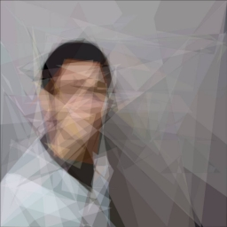
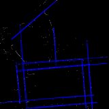
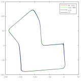
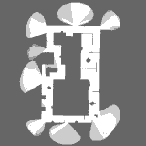
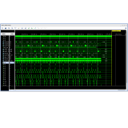
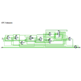
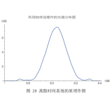
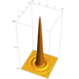

|
I am a first year research postgraduate student (RPG) at The Hong Kong University of Science and Technology (HKUST), Hong Kong. Before that, I received my B.Eng in Information Engineering with honors from Southeast University (SEU), Nanjing, China. Prior to coming to HKUST, I worked as a research intern at Unity-Drive Innovation, Shenzhen, China, and my job mainly focused on simultaneous localization and mapping (SLAM). My previous research mainly focuses on robotics. I love to investigate the ways human beings think of to solve problems when I try to implement the same functions on machines using hardware and algorithms. These functions are typically achievable (worst case, human labor), and I'm enthusiastic to find out autonomous and intelligent approaches. [ Projects / Honors / Selected Courses ] |
|
|  |
|
|
|


|
Binqian Jiang, Dong Han, Yilong Zhu By extracting and matching common features of a reference LiDAR map and the map being built by a visual odometry (VO), e.g. exploit the coplanarity of walls in 2 maps, new constraints are added to global optimization and the drift caused by VO is largely reduced. |
|

|
Binqian Jiang, Yilong Zhu, Ming Liu sample results We consider the 2D SLAM problem using only LiDAR and IMU. I proposed a geometric environment descriptor called Triangle Feature, and further devised a real-time 2D loop closure method using this descriptor. The 2D graph SLAM system I developed has better mapping quality than gmapping and hector-SLAM. |
|
Binqian Jiang, Pengyu Chen 1st Place, Robocup Contest of Southeast University We implemented motion control, autonomous exploration, mapping, and object recognition on a Turtlebot Kobuki. I also trained the the sign detector which is based on Haar cascade classifier. |
|
|


|
Binqian Jiang code I designed the CPU architecture and instruction set, and implemented it on a Xilinx FPGA using VHDL. I also created a compiler for the CPU in Python to compile assembly language code into machine code and allocate RAM for programs. |
|


|
Binqian Jiang 1st Prize, Undergraduate Physics Experiment Research Thesis Contest of SEU A systematic error from light intensity sensors was discovered and its impact analyzed. A method to plot diffraction light intensity using the idea of discrete time system was proposed. |
|
2nd Prize, Formula Student China I designed the car body and aerodynamics apparatus using CATIA, and analyzed and optimized their performance using ANSYS Fluent. I also participated in manufacturing the above mentioned parts using carbon fiber material. |
{kind=link}
{kind=link}
|
|
| Outstanding Graduate of Southeast University (top 5%) | Jun, 2019 | |
| Outstanding Bachelor Thesis of Southeast University (top 5%) | Jun, 2019 | |
| Mitsubishi Electric Scholorship | Apr, 2019 | |
| Ford Scholorship | Oct, 2016 | |
| National Scholorship (top 2%) | Oct, 2016 |
|
|
| Computer Organization and Architecture | Computer Vision Basis | |
| Digital Signal Proecssing | Data Structures | |
| Introduction to Information Communication Network | Data Compression | |
| Principle of Communication | Information Security | |
| High-frequency Communication Circuits and Systems | Digital Communication | |
| Mathematical Methods of Physics | Electromagnetic Fields and Waves | |
| Signals and Systems | Probability Statistics & Stochastic Processes | |
| Digital and Logic Circuits | Fundamentals of Analog Electronic Circuits | |
| Linear Algebra | Advanced Mathematics |
©2019, Binqian Jiang

|
Page template courtesy of Jon Barron. |